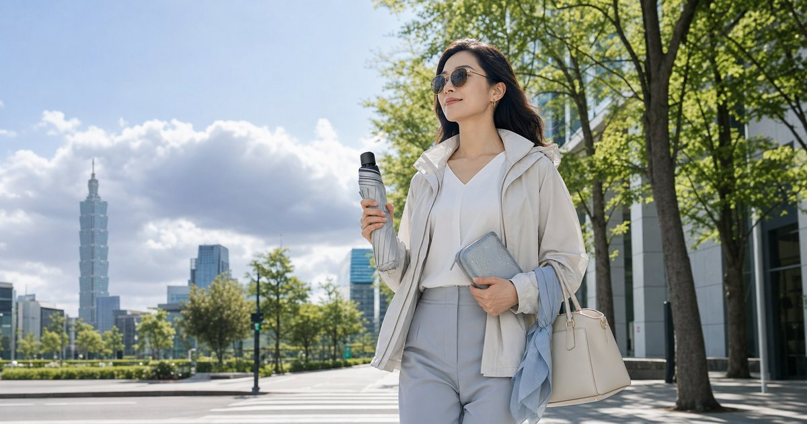

春夏通勤防曬穿搭：防曬外套、抗風傘與輕量包如何不顯狼狽
春夏通勤最難的是在防曬、雨備、冷氣與正式感之間取得平衡。防曬外套、抗風傘和輕量包不用全都搶眼，只要分工清楚就能看起來乾淨。

先把春夏通勤拆成太陽、雨、冷氣和正式感
春夏穿搭常常失控，是因為我們只處理其中一個問題：怕曬就穿厚外套，怕雨就帶大傘，怕冷氣就加披肩，最後整體看起來很重。更好的方式，是讓外套、傘和包分別處理不同任務。
UV100 適合放在防曬外套、帽款與涼感外層；FULTON 和左都雨傘可以處理步行段的晴雨切換；S′AIME 東京企劃與 UD LAB 則分別對應城市感包款與輕量快取。
春夏的麻煩不是單一高溫，而是溫差、紫外線、午後雷陣雨和室內冷氣同時存在。若只用一件外套或一把傘解決全部情境，往往會在移動中顯得手忙腳亂。
- 太陽：防曬外套、帽子、折傘。
- 雨：抗風傘、濕物袋、包內防水。
- 冷氣：薄外層、可收納披肩。
防曬外套要像外層，不要像臨時披上的裝備
防曬外套若版型太運動、顏色太突兀，很容易和上班穿搭分離。選擇時除了看防曬標示，也要看肩線、長度、拉鍊、帽型與是否能搭配襯衫、洋裝或寬褲。
UV100 的角色可以放在核心外層：早上步行、騎車、午餐外出、午後短移動都能使用。但防曬外套不是萬能，正式場合仍要考慮是否需要在室內脫下、摺好、放進包裡。
每天都會穿脫的防曬外套，版型和觸感比想像中重要。它要能放進包裡不佔太多空間，也要在進辦公室或咖啡店時不會破壞原本穿搭的完整度。
- 選能摺進包裡的厚薄，不要讓外套變成負擔。
- 帽型和領口會影響正式感。
抗風傘處理步行段，雨衣處理騎乘段
FULTON 或左都雨傘適合通勤步行段：捷運站到公司、停車場到餐廳、午餐外出。它們的重點是傘面穩定、收合手感與不讓整體穿搭太狼狽。
如果你的通勤包含機車，OMBRA 的雨衣、雨鞋或防水用品才是騎乘段核心；傘具不能取代騎乘雨具。把步行和騎乘分開，你就不會期待一把傘解決所有雨天問題。
抗風傘、防曬傘和輕量包如果分開挑，很容易出現傘太長、包太淺或濕傘無處可放的問題。先確認包內或外側能不能收納傘，再決定傘的尺寸會更穩。
- 步行段：抗風傘、濕傘袋、快取包位。
- 騎乘段：雨衣、雨鞋、防水收納。
輕量包要能收外套、傘和通勤小物
春夏包款最怕只好看但不好收。外套脫下來、傘收起來、行動電源、耳機、補妝小物、水瓶，全都需要位置。若包太小，防曬外套最後會掛在手上，看起來就會失去俐落感。
S′AIME 可以負責比較城市與正式的包款，UD LAB 則適合輕量、快扣與戶外城市感。選包時要留意傘位、濕物袋、外套收納與手機快取，而不是只看照片比例。
- 包內要有濕物隔離方案。
- 外套可以捲收，不要折成大塊。
顏色控制比單品數量更重要
春夏通勤裝備容易看起來凌亂，常常不是因為東西多，而是每一件顏色都在說話：亮色外套、花傘、強烈包款、不同金屬五金，全都擠在一起。
建議只讓一件物品成為視覺重點，其餘維持低彩度。若傘已經有存在感，包和外套就收斂；若包款是主角，防曬外套與傘就選乾淨中性色。這樣機能不會把風格吃掉。
- 一套通勤裝最多一個強色主角。
- 傘、包、外套至少兩件維持低彩度。
到公司後的收納流程，也算穿搭的一部分
春夏通勤的狼狽常發生在抵達後：濕傘不知道放哪，外套塞在椅背，包裡一團亂。真正成熟的配置，是到公司後能快速把外套、傘和小物歸位。
你可以在辦公室固定放一個小毛巾、濕物袋或備用袋；包裡固定一個天氣模組。當流程固定，通勤裝備就不再像臨時加上去的麻煩，而是衣櫥的一部分。
最穩的公式通常是輕薄防曬層、可靠的傘、可放濕物的小袋和不怕擠壓的包款。這些東西各自都不誇張，但合在一起，就能讓通勤和短行程少很多臨時應變。
- 辦公室放備用濕物袋與小毛巾。
- 外套回家後攤開晾，不要長期悶在包裡。
FAQ
防曬外套會不會讓通勤穿搭太休閒？
會不會休閒取決於版型、顏色與搭配。選低彩度、線條乾淨、可摺收的款式，通常比鮮豔運動款更容易接上辦公室穿搭。
抗風傘可以取代雨衣嗎？
不適合。抗風傘主要處理步行段，機車騎乘或大雨移動仍應依實際交通方式使用合適雨具。
春夏通勤包要選大一點嗎？
不一定要大，但要有分區和預留空間。外套、傘、水瓶和電子用品需要分層，否則小包很容易在午後變得混亂。
下一步建議
如果你想讓春夏通勤更乾淨，先固定防曬外層、晴雨傘與包內天氣模組，再慢慢調整色彩。
重要警語
本文為一般穿搭與選購情境整理，不構成醫療、安全或專業保管建議。包款、防曬、雨具與旅行用品仍需依你的交通方式、使用頻率、收納需求與商品頁規格評估；價格、活動與庫存請以商品頁公告為準。
本文含品牌／商品導購連結；若你透過部分商品連結前往選購，Elite Fashion 可能取得合作收益。本文仍以編輯判斷與使用情境整理為主，價格、規格、活動與庫存請以商品頁公告為準。